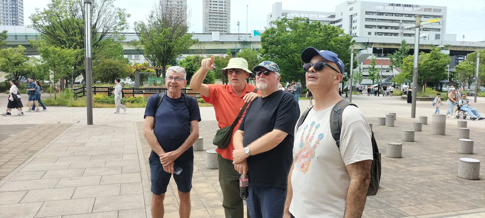

Osaka Castle Walks with Edward - History Beyond the Postcard
An Osaka Castle Park tour for hard-core historians who want to separate facts from myth and ancient propaganda.
Most Osaka Castle tours start in the 1500s. This one starts before Japan had a name — because the castle only makes sense once you've stood where it all began.
Discover the stops ↓
Walk with a historian who lives beside it. Small groups. Osaka Castle every day • 2.5 Hours • English • ¥9,500/person
Last updated: September 2026
Edward Iftody — Osaka Castle's Resident Historian
This is the origin story of Japan. Take a 7,000-year walk through time with a historian who lives beside it.
At the centre of this story is the port of Naniwa—a place so ancient it predates the word Japan itself. Naniwa is where Japan's first civilisation took root, where mainland Asia arrived on Japanese shores, where emperors built their capitals, and where Japan found its name. Understanding Naniwa unlocks everything: why this castle exists, why it fell, and why this small patch of ground is the hinge on which Japanese history turns. This 150-minute walk asks one question at every stop: why here? The hill stays the same. The answer evolves across seven millennia.
We begin at Tanimachi 4-Chome, stepping from the modern cityscape onto a vanished shoreline—the ancient boundary between sea and land that first made this hill worth claiming. The Jomon people settled here 7,000 years ago, long before the pharaohs ruled Egypt. By 1,500 years ago, harbour trade routes already reached Korea and China. You will examine the physical archaeological evidence that proves Naniwa was no provincial backwater.
At the Naniwa Palace Site, step onto the foundations of Japan's 7th-century capital. Here, the Taika Reforms of 645 produced something entirely new: the idea of the Emperor as cosmic sovereign, the name Nihon, and a framework of imperial legitimacy that every warlord, regent, and shogun would spend the next thousand years fighting to control. Kyoto is where the Emperor lived for over a millennium—Naniwa is where the idea of the Empire was born.
The story then shifts to the former grounds of Ishiyama Hongan-ji—the religious stronghold Jesuits described as "the strongest fortress in Japan" that Oda Nobunaga spent a decade failing to break. Standing on its buried remains, you will reconstruct the stronghold that made the most powerful man in Japan look ordinary.
Finally, we enter Osaka Castle itself, built by Toyotomi Hideyoshi on those very ashes. This is where the greatest general of his age made his last stand, where a mother who watched two castles burn made decisions historians still argue about, and where the 400-year official account of what happened to the lord and lady of the castle runs into physical evidence that refuses to cooperate.
We end our walk at the Aoyamon Gate: the threshold where that story closes and 7,000 years of the Uemachi Plateau's dominance ends. After 1615, power moves to Edo permanently, and Osaka ceases to be the centre of Japan's story.
Ideal for: Hard-core historians who want to separate facts from myth and ancient propaganda — archaeology-minded travellers, repeat visitors to Japan, and deep history seekers.
"I was born and raised in Osaka, but I had never looked at this place together with its history before. After hearing the detailed explanation this time, I understood why Naniwa Palace and Osaka Castle were built here.
I recommend exploring the area more deeply with Edward, like solving a mystery together. You will find Osaka and Osaka Castle ten times more interesting."
— 森友子, Osaka
The Ground
The Stops
Four stops — warehouses, Naniwa Palace, Ishiyama Hongan-ji, and Osaka Castle — with stories and sub-stops along the way.
Walk with a historian who lives beside it. Small groups. Osaka Castle every day • 2.5 Hours • English • ¥9,500/person
Edward Iftody — Osaka Castle's Resident Historian

Clarifications
Yes. No other Osaka Castle walk goes back further. Instead of starting at Hideyoshi in the 16th century, this tour opens with the Jomon settlements that first made the Uemachi ridge worth claiming 7,000 years ago, then follows the Yayoi and Kofun eras, Queen Himiko's Yamatai, and the earliest imperial capitals. It treats the modern park as an active archaeological site, making it the best Osaka Castle deep history tour for travelers who want the story beneath the castle — not just the castle.
Because this tour is engineered for deep history seekers and repeat visitors who are tired of surface-level tourism. If you are returning to Japan, you don't need a guide to point at a wall and tell you it’s made of stone. You want to understand the why. This tour bypasses the generic postcard narrative to explore 1,500 years of structural state formation, religious defiance, and erased fortresses, making it the definitive alternative for travelers looking for a rigorous, historian-led experience.
Long before the 7th century when the nation officially adopted the name "Nihon" (Japan), the archipelago was a collection of distinct chiefdoms recorded in early Chinese chronicles as "Wa." This tour explores the deep timelines of the Jomon, Yayoi, and Kofun eras, tracing how early state formation, shifting geography, and ancient rulers like Queen Himiko of Yamatai transformed a fractured region into a unified political powerhouse.
You cannot understand early Japanese state formation without reading the landscape. We treat the Uemachi ridge as an active archaeological site. By looking past the concrete of the modern city, we reconstruct the ancient geography to understand exactly why early kings and the first imperial courts chose this specific, strategic high ground to consolidate their power and build the nation's earliest capitals.
The transition from the ancient chiefdoms of Wa to the centralized state of Japan was forged in political upheaval. We examine pivotal turning points, such as the era of Empress Kōgyoku/Saimei and the Taika Reforms of the mid-7th century. We discuss the court intrigues, assassinations, and sweeping changes that dismantled the old clan systems and led to the birth of Japan's first true imperial capital right here in Osaka.
Standard tours focus entirely on the samurai era and the post-war reconstructed interior of the castle keep. This walk is an intellectual investigation personally led by Edward Iftody, going back millennia before the samurai even existed. We bypass the tourist crowds inside the keep to examine raw archaeological layers and deep-timeline geography. It is a premium experience designed for travelers wanting to look beyond the surface and understand the true ancient roots of Japan.
Go Deeper
Research by Edward Iftody, Osaka-based historian and resident historian at Osaka Castle.
This reconstruction draws on contemporary European accounts, Japanese archaeological research, historical geography, and the surviving physical landscape.